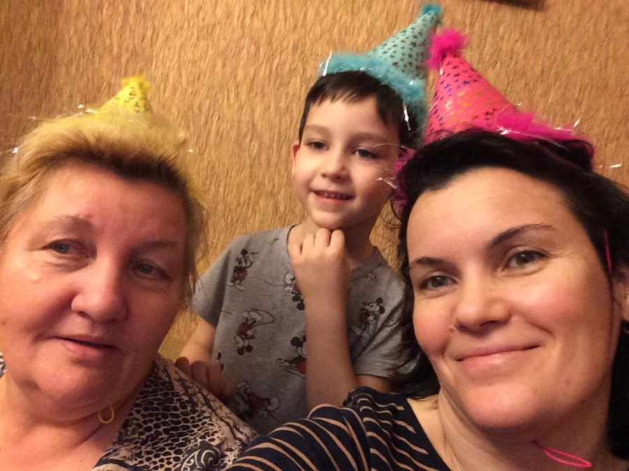

Биография
Как вы наверно поняли Богдан это я создатель этого сайта. Родился я 20.04.09. Если посчитать, то получиться что мне 13 лет. Точнее у этом году уже исполниться 14. Учусь я в Физико математическом лицее № 83 города Казани. Сейчас я уже в 7 классе Д. И как мне кажется я ещё не нашёл друзей с которыми я буду общаться даже после школы. Но как на период школы у меня есть друзья.
Кем хочет работать?
Когда мне задают вопрос кем же я хочу стать в будущем я всегда говорю что я пока не определился или ещё не знаю. Но мне говорят что нужно уже задумываться. И когда я сам задаю себе этот вопрос сразу вспоминаю как изначально. Я хотел стать почтальоном после я хотел стать пожарным, полицейским, директором компании, спортивным врачом, дизайнером, строитель прораб, бухгалтером и д.т. Но не давно мне Тахир предложил стать интернет маркетологом или Web-разработчиком. Но больше я наверно склоняюсь к маркетингу, но пока ещё не решил потому что Тахир сказал то что купит курс. Поэтому я сейчас жду. А вдруг мне правда понравится? Поэтому пока больше склоняюсь к интернет маркетингу
Родители
У меня, как и у большинства людей есть родители. И я также очень их люблю. И с родителями я могу поделиться своими проблемами, обидами. Например, я с мамой могу поделиться любыми своими проблемами, чувствами. И больше всего мне нравится в маме то что с мамой я могу посмотреть вместе фильм, посмеяться, поиграть в настольные игры и много другого. А с бабулей я мог поделиться своими обидами, попросить помочь мне погреть еду, съездить со мной куда-то посоветоваться например какой подарок подарить маме. И также я вспоминаю только лучшие моменты например. Как мы ездили в Москву, Санкт-Петербург , Йошкар-Олу, Чебоксары, Булгры. Или как мы играли в настольные игры все вместе. Ездили в деревню, на дачу.
Хобби
У меня, как и мамы нет основного хобби мне нравится и собирать лего, и помогать маме, гулять с собакой, делать сайты, заниматься земледелием, печь торты, пироги, печенье, заниматься математикой. Но больше всего я люблю заниматься лыжами мне нравится ехать с какой-нибудь горки и ощущать свежий воздух, облегчение, скорость лыж и сам скорость. Поэтому я больше склонен к лыжам чем к тому что я написал ранее
Как мне кажется ещё одно важное для меня хобби это ориентирование. Потому что мне нравится бегать в лесу и дышать свежим воздухом. И нравится искать по карте контрольные пункты (КП) и потом ходить на соревнования где надо будет быстро сориентироваться